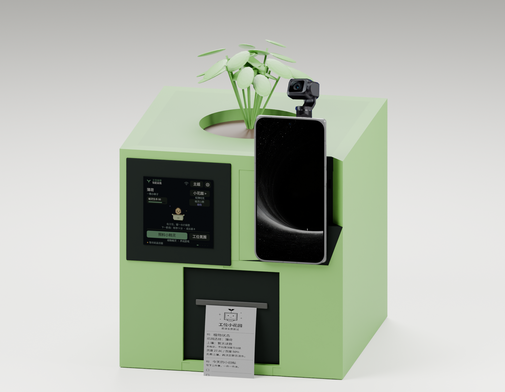

“Morning. I'm here.”
Start with a check-in. A little garden ticket leaves room for the three things that matter today.
SMALL GARDEN. BETTER WORKDAY.
A real plant. A pixel companion.
A little paper reminder to care for both of you.
Talk to YOYO, check on your plant, and turn a busy day into one small act of care.
HONOR Robot Phone × Seeed XIAO × SenseCAP Indicator

01 / A DAY WITH A LITTLE GREEN
Not another productivity score.
A small companion for the day you are actually having.
Start with a check-in. A little garden ticket leaves room for the three things that matter today.
Hear a calibrated soil percentage and valid environmental readings, from the same controller the screen uses.
Make space for a break, a focus session or a tiny paper souvenir. The plant can wait while you breathe.
These controls change this page only. They do not discover or control your hardware.
Ready for a little green.
SOIL 65% calibrated · sample
GREEN / ONLINE STATUS DEMOA browser timer; the real device uses XIAO's shared timer.
02 / CLEAR CONNECTIONS
The phone handles conversation.
The screen makes state visible.
XIAO coordinates the physical world.
Official Skill BLE tool
Calibration · actions · results
Full ticket · automatic cut
Wi-Fi / authenticated HTTP ↔ XIAO
RP2040 soil ADC → internal UART → display ESP32
SEN54 · ambient light · water distance
30 pixels · independent pump circuit
The phone pairs with XIAO, not Indicator. The two boards need no external data wire. A cloud server is not required for this local path. Read the engineering API ↗
| Peripheral | Connection | Power / important detail |
|---|---|---|
| SEN54 | SDA GPIO5 / SCL GPIO6 | Independent 5 V; I²C signals 3.3 V |
| Ultrasonic Ranger v2.0 | J10 RX / D7 / GPIO44 | Independent 3.3 V; one bidirectional SIG |
| Light Sensor v1.2 | SERVO3 / D0 / GPIO1 | 3.3 V |
| Relay v1.2 | SERVO1 / GPIO42 | Separate 12 V pump circuit |
| WS2813 · 30 pixels | RGB / GPIO40 | Suitable 5 V supply; limited brightness |
| Soil probe | Indicator RP2040 GPIO27 | 3.3 V; samples relayed to XIAO |
| Thermal printer | XIAO → BLE | Independent supply; USB/TTL disconnected |
M2 is unused. GPIO43 stays disconnected from the printer. GPIO44 is reserved for the ultrasonic signal. Connector and supply details ↗
03 / SOMETHING YOU CAN KEEP
Plant status. Three handwritten to-dos.
One of 78 tarot cards, upright or reversed.
The card and content stay fixed between preview and printing. The tested 128-row bitmap path preserves proportions, and the printer cuts the finished ticket.
Tarot is entertainment and a reflection prompt. Game health is not a measurement of plant health.
Explore the ticket design ↗A little care goes a long way.
Mint · Soil 65%
25°C · Air humidity 49%
Illustrative values, not live readings
□ ____________________
□ ____________________
□ ____________________
THE STAR · UPRIGHT
Make space for a fresh start.
Care for your plant.
Remember to rest, too.
04 / BUILD YOUR OWN COMPANION
Start with one trustworthy reading.
Add the experience one link at a time.
Print Body8, Body9 and Body16, one each. Body20 is a reference volume and is not printed. Check fits and keep liquid away from electronics.
Download the three 3MF files ↗Use the supported XIAO and Indicator targets, pinned libraries and your own private configuration. Start with actuators disabled.
Follow the build guide ↗Join the same Wi-Fi, confirm authenticated HTTP, and save real substrate and tank references. Pair the phone with XIAO.
Calibrate the sensors ↗Read a calibrated value, change the light, preview one ticket and confirm its paper output. Test focus and liquid actions separately.
Run the acceptance checks ↗05 / BUILT, TESTED, STILL GROWING
Calibrated phone reads; bond-preserving reconnect; all 30 LEDs green → white → green; moving-target D7 distance; matching screen-to-paper tickets and automatic cut.
Full voice scene-print/focus flows, the audible buzzer, the complete network-change workflow and a specific NFC entry still need checks. Voice-started watering is not enabled.
Last recorded field confirmations: November 4, 2026. English documentation: November 13, 2026. Local Skill 1.0.3 does not establish the version installed on the phone. Evidence and remaining work ↗
06 / TAKE THE PROJECT FURTHER